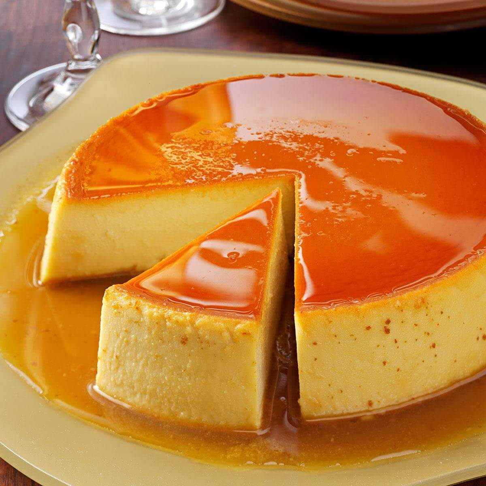

Main Page
Flan Recipe

Homemade Flan
Ingredients Below
- 1 cup of white Sugar
- 3 whole eggs
- 1 (14 ounce) can sweetened condensed milk
- 1 (12 fluid ounce) can evaporated milk
- 1 tablespoon of vanila extract
Directions
- Preheat the oven to 350 degrees F (175 degrees C).
- Melt sugar in a medium saucepan over medium-low heat until liquefied and golden in color. Carefully pour hot syrup into a 9-inch round glass baking dish, turning the dish to evenly coat the bottom and sides; set aside
- Beat eggs in a large bowl. Add condensed milk, evaporated milk, and vanilla; beat until smooth. Pour egg mixture into the baking dish; cover with aluminum foil.
- Bake in preheated oven for 1 hour. Let cool completely.
- To serve, carefully invert onto a rimmed serving plate; let caramel sauce flow over flan.
- Enjoy!!